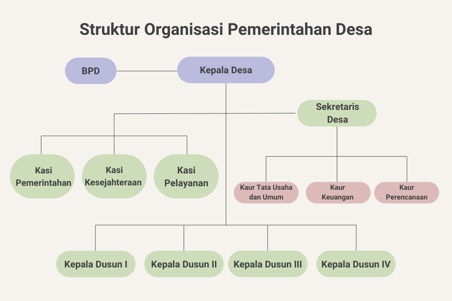

Tentang Desa

Struktur Organisasi
Struktur Organisasi Desa Nagaratengah
Posyandu
Kegiatan Posyandu yang rutin dilakukan satu minggu sekali- Program kesehatan ibu hamil
- Program kesehatan anak
- Keluarga Berencana (KB)
- Imunisasi
- Pemantauan status gizi
Posyandu
Kegiatan Posyandu yang rutin dilakukan satu minggu sekali- Program kesehatan ibu hamil
- Program kesehatan anak
- Keluarga Berencana (KB)
- Imunisasi
- Pemantauan status gizi